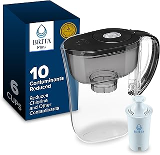
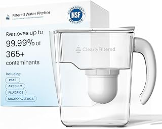
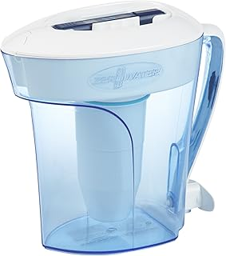
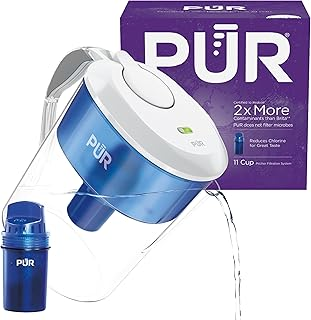
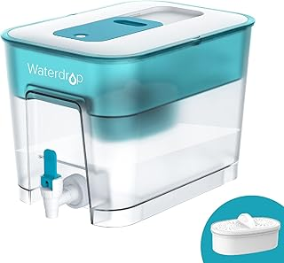

← bestwaterfilterpitcher.com
The Waterfilterpitcher Market in 2026: What's Changed
May 2026
Whether you're upgrading or buying your first, the right waterfilterpitcher in 2026 comes down to a few factors most buyers overlook.
What Most Reviews Skip
- Set a firm budget before browsing. It's easy to creep up $50-100 comparing waterfilterpitcher features.
- Amazon's return policy removes most of the risk when buying waterfilterpitcher you haven't seen in person.





Worth Your Money
⭐ 4.5 · $31.98
⭐ 4.6 · $29.99
⭐ 4.3 · $40.51
⭐ 4.2 · $100.00
⭐ 4.5 · $24.49
The Features That Count
- Return policy — Easy returns mean lower risk. Even well-reviewed waterfilterpitcher might not suit your situation.
- Warranty — Real warranty coverage (1+ year) signals a manufacturer that stands behind their product.
- Value ratio — Mid-range waterfilterpitcher usually deliver 90% of premium performance at half the cost.
The Bottom Line
We update our waterfilterpitcher reviews as new products launch. Bookmark bestwaterfilterpitcher.com for the latest.
Affiliate Disclosure: As an Amazon Associate, we earn from qualifying purchases. This doesn't affect our recommendations.